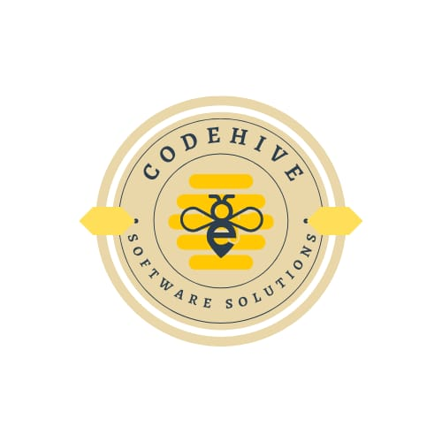

<!DOCTYPE html>
<html>
<head>
  <meta charset="utf-8" />
  <title>ClearPath - Bastón Inteligente</title>
  <meta name="viewport" content="width=device-width, initial-scale=1" />
  <link rel="stylesheet" href="css/estilo.css" />
</head>
<body>
  <div id="pantalla-inicial">
    <div class="splash-content">
      
    </div>
    
    <div class="splash-footer">
      <p class="footer-text">ClearPath</p>
      
    </div>
  </div>

  <script src="js/talkback.js"></script>
  <script>
    // Función para mostrar splash por 3 segundos y luego redirigir
    function iniciarAplicacion() {
      // Anunciar app con TalkBack
      setTimeout(() => {
        if (window.talkBack) {
          window.talkBack.speak('Bienvenido a ClearPath, aplicación para bastón inteligente. Toque la pantalla para continuar', 'high');
        }
      }, 1000);
      
      setTimeout(function() {
        window.location.href = 'login.html';
      }, 5000); // 5 segundos de splash para dar tiempo a TalkBack
    }

    // Permitir que el usuario haga clic para saltar el splash
    document.addEventListener('click', function() {
      if (window.talkBack) {
        window.talkBack.speak('Navegando al inicio de sesión', 'high');
      }
      setTimeout(() => {
        window.location.href = 'login.html';
      }, 500);
    });

    // Permitir que el usuario toque la pantalla para saltar el splash (móvil)
    document.addEventListener('touchstart', function() {
      if (window.talkBack) {
        window.talkBack.speak('Navegando al inicio de sesión', 'high');
      }
      setTimeout(() => {
        window.location.href = 'login.html';
      }, 500);
    });

    // Iniciar el temporizador automático
    window.addEventListener('load', iniciarAplicacion);
  </script>
</body>
</html>
